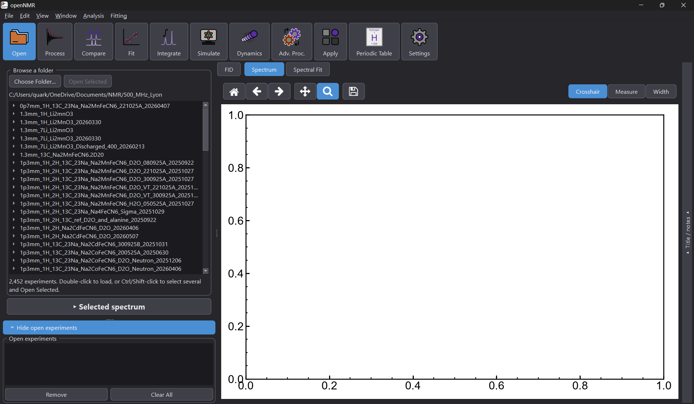

Process, fit and simulate NMR data in one window
openNMR is a free, open-source app for working with your NMR experiments, from raw Bruker data to fitted spectra and simulations. No scripting needed.

Every tool in the toolbar has a guide
The buttons along the top of openNMR are the steps of a typical workflow. Pick one to see how it works.

Open
Browse a folder of experiments and load one or several spectra.

Process
Turn raw FIDs into spectra.

Compare
View several spectra side by side.

Fit
Fit your spectra and read off the parameters.

Integrate
Measure the area under peaks.

Simulate
Generate spectra from your own parameters.

Dynamics
Explore how motion changes a spectrum.

Advanced processing
Specialised processing for more demanding data.

Apply
Reuse your choices across several experiments.

Periodic table
Look up the properties of each nucleus.

Settings
Adjust openNMR to suit the way you work.
New to openNMR?
Start here, then work through the tools above in any order.